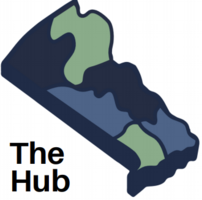

Resources
Resource Hubs
211.org by United Way
United Ways’ 211 database includes a spectrum of available resources in the surrounding community. It also serves as a hotline for connection to resources.
Call 211 or Visit their website for more information.

Bucks County Human Services Connect Hub
The Hub is a “one-stop shop” launched by the Bucks County Human Services Division for community members seeking connection to county government and nonprofit services. You can find The Hub on the first floor in the Administration Building in Doylestown, PA! They’re available in-person and virtually for support.
Visit The Hub's Website

Food & Housing
Bucks County Opportunity Council
Pantry List
Fresh Connect Farmer’s Market Program
Program Information
Bucks County Housing Link
Program Information
Bucks County Emergency Shelter
Shelter Locations
Valley Youth House
Shelter Locations
Mental Health
Truman High School's Virtual Calming Room
The guidance office at Harry S. Truman High School developed a virtual space for students to ease any stress and anxieties they may face. The website includes guided meditations, journaling exercises, and more.
Access the Calming Room
Bucks County Suicide and Crisis Intervention 24-Hour Hotline
Talk to someone at 1-800-499-7455
National Alliance on Mental Illness (NAMI) Services Bucks County
Learn About NAMI Resources